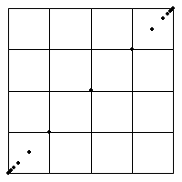

1. (a) Here is the Driven IFS.
| (a) |  |
| The data set consists of 12 points in bin 1 followed by 12 points in bin 4. | ||||
| So the first twelve driven IFS points after |
||||
| The next twelve points are | ||||
|
||||
| This last point is very close to (1, 1), because 1 + 2 + ... + 2n = 2n+1 - 1 |
Of course the positions of these points can be understood more easily using the geometric interpretation:
so the first twelve points march from
Return to Exercises.